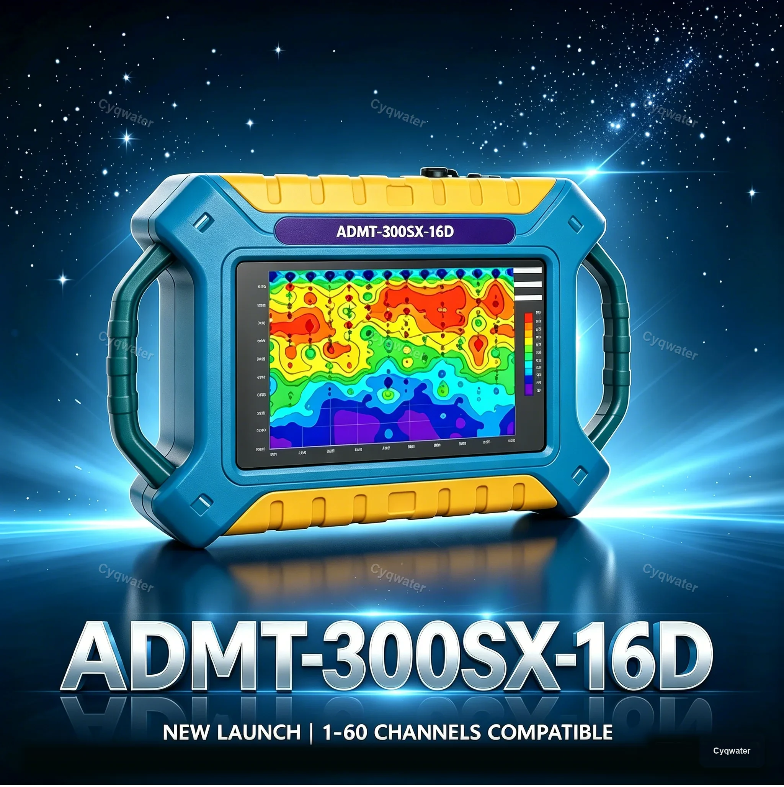

ADZN3000 Review 2026: Complete Field Test Results
A practical review of the ADZN3000 deep water detector, including test criteria, use cases, strengths, limits, and buying guidance.
Read full reviewReview center
Our review center compares groundwater detection equipment through field-use criteria such as depth range, ease of operation, geological adaptability, shipping readiness, and after-sales support.
Featured review

A practical review of the ADZN3000 deep water detector, including test criteria, use cases, strengths, limits, and buying guidance.
Read full reviewBuying guides
Compare practical detector features for irrigation planning, farm wells, and rural water source positioning.
Request guideUnderstand depth range, terrain, anti-interference capability, operating workflow, and delivery considerations.
Compare productsReview express, air freight, and sea freight timing for customers planning drilling projects and equipment procurement.
Ask logisticsNeed a recommendation?
We can help you compare detector options and choose a practical model for field work, resale, or project procurement.